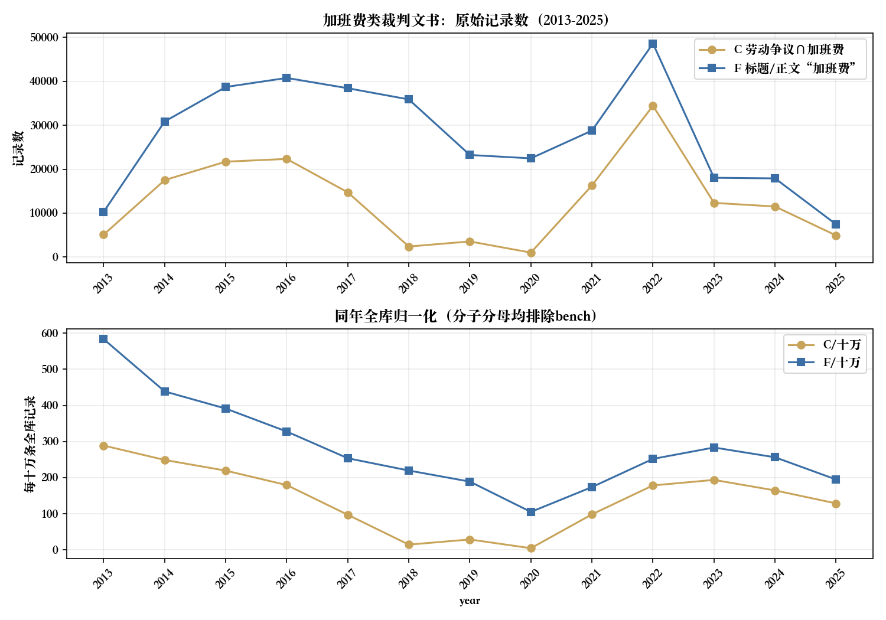
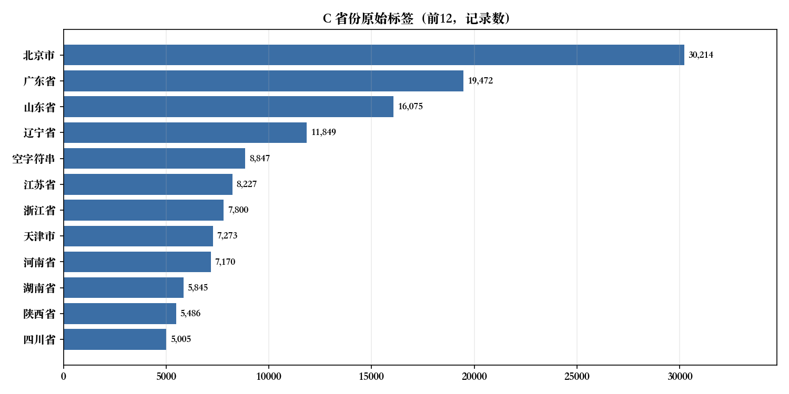

面向劳动法论文与实证课题：先把标签、全文、日期与文书粒度分开。本页未完成主文编码和一二审归并，因此不提供加班费支持率、驳回率或胜诉率。
一、主题与集合：先把「案由」与「全文」分开
C为可筛选keyword字段cause精确等于「劳动争议」与正文短语「加班费」的交集；F为标题或正文检索完整词「加班费」（不限案由）；F2为同义写法「加班工资」；M为两词并集。所有正式集合排除bench测试批次，正文短语对ik_smart与ik_max_word取逻辑并集。
| 集合 | 口径 | 记录数 | 案号以「号」结尾 | 原始相异案号约 |
|---|---|---|---|---|
| L | 案由「劳动争议」 | 1,932,525 | — | — |
| C | L∩正文「加班费」 | 173,568 | 173,056 | 155,653 |
| F | 标题/正文「加班费」(全案由) | 377,626 | 373,858 | 328,573 |
| F2 | 标题/正文「加班工资」(全案由) | 360,412 | 356,132 | 316,346 |
| C2 | L∩正文「加班工资」 | 158,873 | — | — |
| U | L∪F | 2,136,583 | — | — |
| M | F∪F2（同义并集） | 526,747 | 520,544 | 461,826 |
检索日期：2026-10-26；查询与原始聚合响应，键：labor_only, Hc_labor_and_hoursfee, Hany_hoursfee, Hu_union_synonym。记录为精确查询计数，原始相异案号为HLL估算。
F比C多出的约20.4万条，绝大部分落在「劳动合同纠纷」「追索劳动报酬纠纷」「劳务合同纠纷」等案由，也有约11.3万条案由字段为空；因此不能简单说它们都是「劳动争议案由漏标」，也可能本就不在劳动争议案由下。
「加班费」出现在判决里，可能是当事人诉求、用人单位抗辩、法院说理、法条转述或与他案事实，本页没有编码裁判主文，不能算出支持率。
二、2013–2025：原始量与同年全库分母并列
归一化=该集合当年记录÷同年全库记录×100000，分子分母都用year并排除bench；不是人口、就业人数或法院受理量。year派生自索引date，部分批次可能是公开或采集时间，不保证裁判落款年。

| year | C记录 | C相异案号约 | F记录 | 同年全库分母 | C/十万 | F/十万 |
|---|---|---|---|---|---|---|
| 2013 | 5,092 | 5,014 | 10,282 | 1,762,537 | 288.90 | 583.36 |
| 2014 | 17,513 | 17,293 | 30,854 | 7,033,956 | 248.98 | 438.64 |
| 2015 | 21,710 | 21,449 | 38,705 | 9,894,747 | 219.41 | 391.17 |
| 2016 | 22,334 | 22,050 | 40,768 | 12,443,177 | 179.49 | 327.63 |
| 2017 | 14,722 | 14,618 | 38,426 | 15,147,489 | 97.19 | 253.68 |
| 2018 | 2,394 | 2,088 | 35,878 | 16,331,967 | 14.66 | 219.68 |
| 2019 | 3,552 | 1,871 | 23,233 | 12,290,542 | 28.90 | 189.03 |
| 2020 | 1,012 | 580 | 22,465 | 21,359,050 | 4.74 | 105.18 |
| 2021 | 16,285 | 14,487 | 28,779 | 16,548,198 | 98.41 | 173.91 |
| 2022 | 34,435 | 23,679 | 48,601 | 19,292,669 | 178.49 | 251.91 |
| 2023 | 12,332 | 11,781 | 18,042 | 6,365,236 | 193.74 | 283.45 |
| 2024 | 11,499 | 11,432 | 17,904 | 6,984,435 | 164.64 | 256.34 |
| 2025 | 4,917 | 4,898 | 7,442 | 3,818,342 | 128.77 | 194.90 |
检索日期：2026-10-26；查询与原始聚合响应，键：Hc_labor_and_hoursfee, Hany_hoursfee, corpus_years。记录为精确查询计数，原始相异案号为HLL估算。
C的2013–2025合计约16.8万，占C总数97%；其余约1%落在2012年之前或异常year键（全库存在200/205/1003等异常键，需设有效性规则）。C在2018年骤降到2,394、2020年仅1,012，与同库其他精确案由页一样，首先应查批次标签覆盖，而不是推断加班争议消失。2022年34,435是C的峰值，是否包含批量程序或复本需进一步核。
三、地域、程序与标题文类

| 省份原始标签 | C记录 | 占C |
|---|---|---|
| 北京市 | 30,214 | 17.41% |
| 广东省 | 19,472 | 11.22% |
| 山东省 | 16,075 | 9.26% |
| 辽宁省 | 11,849 | 6.83% |
| 空字符串 | 8,847 | 5.10% |
| 江苏省 | 8,227 | 4.74% |
| 浙江省 | 7,800 | 4.49% |
| 天津市 | 7,273 | 4.19% |
| 河南省 | 7,170 | 4.13% |
| 湖南省 | 5,845 | 3.37% |
| 陕西省 | 5,486 | 3.16% |
| 四川省 | 5,005 | 2.88% |
| 广西壮族自治区 | 4,283 | 2.47% |
| 河北省 | 4,111 | 2.37% |
| 湖北省 | 4,080 | 2.35% |
| 吉林省 | 3,820 | 2.20% |
| 重庆市 | 3,480 | 2.00% |
| 安徽省 | 3,469 | 2.00% |
| 福建省 | 2,861 | 1.65% |
| 新疆维吾尔自治区 | 2,452 | 1.41% |
| 黑龙江省 | 2,066 | 1.19% |
| 内蒙古自治区 | 1,423 | 0.82% |
检索日期：2026-10-26；查询与原始聚合响应，键：Hc_extras。记录为精确查询计数，原始相异案号为HLL估算。
空字符串与字段缺失保留，省份异形标签（如「江江苏省」）未合桶。C内上海仅365条，而全案由口径F内上海20,685条——说明上海的加班费争议多登记在「劳动合同纠纷」等其他案由下，案由口径会系统性低估该地区。集中管辖、批量程序与复本都可能改变地域分布。
| 程序集合 | C记录 | 备注 |
|---|---|---|
| 一审 | 89,778 | 其中案号含「初」21,962 |
| 二审 | 74,223 | 其中案号含「终」31,113 |
| 审判监督/再审 | 6,590 | 含民事审判监督1,539 |
| 执行类 | 708 | 执行实施474 |
| 未映射/其他 | 130 | 其他113 |
检索日期：2026-10-26；查询与原始聚合响应，键：Hc_extras。记录为精确查询计数。
原始procedure字段同时存在数字码（1/2/3/4）与中文标签，本页按一审/二审/审判监督/执行归类后求和，未猜编码语义，也未跨程序合并；文书量比不是上诉率。
| 标题文类（词面） | C记录 | 占C |
|---|---|---|
| 判决书 | 154,034 | 88.75% |
| 裁定书 | 10,823 | 6.24% |
| 调解书 | 108 | 0.06% |
| 通知书 | 108 | 0.06% |
| 决定书 | 0 | 0.00% |
| 标题未识别 | 8,495 | 4.89% |
检索日期：2026-10-26；查询与原始聚合响应，键：Hc_extras。记录为精确查询计数。
标题文类用词面规则（标题含「判决书/裁定书/调解书/通知书/决定书」统计，未去重），判决书占近九成；未识别部分含空白标题与其他文书。词面分类不能替代逐案文种审计。
四、工时制度与法条共现
下表为C内正文命中相应词的记录数与占C比例，每项独立、词间可重叠，不相加。phrase是分词位置匹配，不等于逐字子串验证，更不是立场或裁判结果编码。
| 正文词 | C命中 | C共现率 |
|---|---|---|
| 加班工资 | 103,256 | 59.49% |
| 劳动合同法 | 135,658 | 78.16% |
| 劳动法 | 91,645 | 52.80% |
| 考勤 | 79,888 | 46.03% |
| 经济补偿 | 75,597 | 43.55% |
| 劳动仲裁 | 72,952 | 42.03% |
| 未休年休假 | 42,906 | 24.72% |
| 法定节假日加班 | 39,415 | 22.71% |
| 休息日加班 | 38,196 | 22.01% |
| 二倍工资 | 34,678 | 19.98% |
| 延时加班 | 22,647 | 13.05% |
| 补休 | 22,032 | 12.69% |
| 调休 | 18,012 | 10.38% |
| 综合计算工时 | 15,078 | 8.69% |
| 不定时工作制 | 11,651 | 6.71% |
| 加班审批 | 3,805 | 2.19% |
检索日期：2026-10-26；查询与原始聚合响应，键：Hc_labor_and_hoursfee。记录为精确查询计数，原始相异案号为HLL估算。
「劳动合同法」「劳动法」是最常被援引的两部法律，但援引比例只说明判决引法倾向；「不定时工作制」「综合计算工时」常与是否应付加班费的争议同现，但共现不等于法院认定工时制度。C内「加班费」与「加班工资」两词共现103,256条，占C的59.5%，说明同义写法分布不均，只用一个词会低估召回。
五、可复现方法与不可外推的边界
- 这是全量聚合，未抽样，也未声称语义纯度。若需人工复核，应按dataset分层，记录random_score种子和n，保留批内平手偏差及编码表；本页没有凭空补样本。
- 正文短语对ik_smart与ik_max_word双分析器取逻辑并集：本页「加班费」两分析器结果一致（各377,621含bench），零命中情况可能是分析器差异而非真的不存在。
- 正文空白、公开事由占位、缺段或截断都会改变共现；exists(body)不证明可用全文。本轮未实读正文完整性，不报完整率。
- 案由缺失和文本引述影响C/F两套分母；记录数不是独立纠纷，HLL原始案号不是规范化精确去重，不能与历史页面相减。
- 研究加班工资法条适用须逐份核落款日期、争议发生时间与适用条款，再建立程序关联。索引year只用于收录画像，不能识别政策因果。
- 归一化仅校正同年收录规模，不消除公开选择、批次覆盖或重复。任何细分样本少于30，无法得出统计结论。
六、附录：查询、聚合与引用
judgments索引，size:0、track_total_hits:true；所有正式响应未超时、failed shards=0。附档仅含查询及汇总，无姓名、案号明细或正文。每个表的来源键对应附档请求与返回；正式引用请带检索日期、集合、案号处理及统计限制。
C：案由「劳动争议」∩ 正文「加班费」（检索式）
{
"bool": {
"filter": [
{
"term": {
"cause": "劳动争议"
}
},
{
"bool": {
"should": [
{
"match_phrase": {
"body": {
"query": "加班费",
"analyzer": "ik_smart"
}
}
},
{
"match_phrase": {
"body": {
"query": "加班费",
"analyzer": "ik_max_word"
}
}
}
],
"minimum_should_match": 1
}
}
],
"must_not": [
{
"term": {
"dataset": "bench"
}
}
]
}
}F：标题/正文「加班费」（检索式）
{
"bool": {
"should": [
{
"match_phrase": {
"title": {
"query": "加班费",
"analyzer": "ik_smart"
}
}
},
{
"match_phrase": {
"title": {
"query": "加班费",
"analyzer": "ik_max_word"
}
}
},
{
"match_phrase": {
"body": {
"query": "加班费",
"analyzer": "ik_smart"
}
}
},
{
"match_phrase": {
"body": {
"query": "加班费",
"analyzer": "ik_max_word"
}
}
}
],
"minimum_should_match": 1
}
}本页为研究方法样例。所有记录数与相异案号均为当前索引的聚合估算，不是官方统计、不是完整覆盖、不是裁判结果比例。相关页面：劳动争议地区数据、个人信息类裁判数据、裁判数据索引。